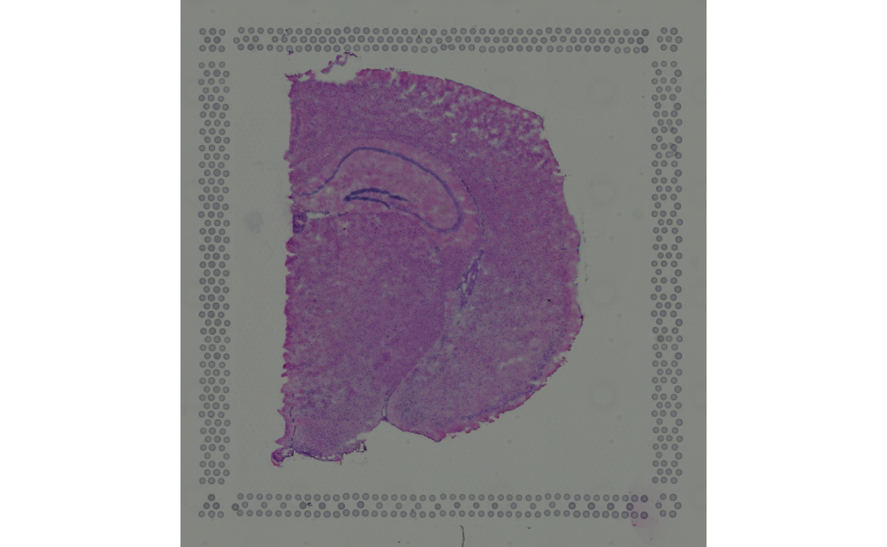

vignettes/SpatialExperiment.Rmd
SpatialExperiment.RmdThe 10X Genomics’ CellRanger pipeline will process data using standard output file formats that are saved, for each sample, in a single directory /<sample>/outs/ of the following structure:
sample
|—outs
··|—raw/filtered_feature_bc_matrix.h5
··|—raw/filtered_feature_bc_matrix
····|—barcodes.tsv
····|—features.tsv
····|—matrix.mtx
··|—spatial
····|—tissue_hires_image.png
····|—tissue_lowres_image.png
····|—detected_tissue_image.jpg
····|—aligned_fiducials.jpg
····|—scalefactors_json.json
····|—tissue_positions_list.csvThe SpatialExperiment package provides an exemplary 10X Visium spatial gene expression data of two serial mouse brain sections (Sagittal-Posterior) available from the 10X Genomics website. These are located in the extdata/10xVisium directory:
library(SpatialExperiment)
dir <- system.file(
file.path("extdata", "10xVisium"),
package = "SpatialExperiment")
sample_ids <- c("section1", "section2")
samples <- file.path(dir, sample_ids)We can load these data into a SpatialExperiment using the read10xVisium() function, which will read in all relevant information, including the count data, spatial metadata and coordinates, scale factors, and images:
list.files(samples[1])## [1] "raw_feature_bc_matrix" "spatial"
list.files(file.path(samples[1], "spatial"))## [1] "scalefactors_json.json" "tissue_lowres_image.png"
## [3] "tissue_positions_list.csv"
(spe <- read10xVisium(samples, sample_ids,
type = "sparse", # use sparse (not HDF5) format
data = "raw", # read all (not filtered) data
images = "lowres", # specify which image(s) to include
load = TRUE)) # specify whether or not to load image(s)## class: SpatialExperiment
## dim: 50 99
## metadata(0):
## assays(1): counts
## rownames(50): ENSMUSG00000051951 ENSMUSG00000089699 ...
## ENSMUSG00000005886 ENSMUSG00000101476
## rowData names(1): symbol
## colnames(99): AAACAACGAATAGTTC-1 AAACAAGTATCTCCCA-1 ...
## AAAGTCGACCCTCAGT-1 AAAGTGCCATCAATTA-1
## colData names(1): sample_id
## reducedDimNames(0):
## mainExpName: NULL
## altExpNames(0):
## spatialData names(3) : in_tissue array_row array_col
## spatialCoords names(2) : pxl_col_in_fullres pxl_row_in_fullres
## imgData names(4): sample_id image_id data scaleFactorSpatialExperiment classspatialData & -Coords
Spatial metadata are stored inside the int_colData’s spatialData field as a DataFrame and include:
in_tissue indicating whether an observation was mapped to tissuearray_row/col giving the spots’ row/column coordinate in the array1
head(spatialData(spe))## DataFrame with 6 rows and 3 columns
## in_tissue array_row array_col
## <logical> <integer> <integer>
## AAACAACGAATAGTTC-1 FALSE 0 16
## AAACAAGTATCTCCCA-1 TRUE 50 102
## AAACAATCTACTAGCA-1 TRUE 3 43
## AAACACCAATAACTGC-1 TRUE 59 19
## AAACAGAGCGACTCCT-1 TRUE 14 94
## AAACAGCTTTCAGAAG-1 FALSE 43 9
# tabulate number of spots mapped to tissue
table(
sample_id = spe$sample_id,
in_tissue = spatialData(spe)$in_tissue)## in_tissue
## sample_id FALSE TRUE
## section1 28 22
## section2 27 22A numeric matrix of spatial coordinates (here, x and y) is stored inside the int_colData’s spatialCoords field, and can be accessed using the spatialCoords() accessor:
head(spatialCoords(spe))## pxl_col_in_fullres pxl_row_in_fullres
## AAACAACGAATAGTTC-1 1252 2312
## AAACAAGTATCTCCCA-1 7237 8230
## AAACAATCTACTAGCA-1 1611 4170
## AAACACCAATAACTGC-1 8315 2519
## AAACAGAGCGACTCCT-1 2927 7679
## AAACAGCTTTCAGAAG-1 6400 1831Note that the colData, spatialData, and spatialCoords slots follow a hierarchical structure where colData > spatialData > spatialCoords. Here, each accessor function allows joint accession of the target slot, and (optionally) any slot(s) that precedes it.
Specifically, the following commands are supported may be used to access specific subsets of (spatial) metadata associated with each column (observation, e.g. spots or cells) in a SPE:
spatialCoords(spe)
spatialData(spe)
spatialData(spe, spatialCoords = TRUE)
colData(spe, spatialData = TRUE)
colData(spe, spatialCoords = TRUE)
colData(spe, spatialData = TRUE, spatialCoords = TRUE)imgData
Image-related data are stored in the int_metadata’s imgData field as a DataFrame with the following columns:
sample_id and image_id specifying the image’s sample and image identifierdata is a list of SpatialImages containing the image’s grob, path and/or URLscaleFactors are used to rescale spatial coordinates according to the image’s resolutionWe can retrieve these data using the imgData() accessor:
imgData(spe)## DataFrame with 2 rows and 4 columns
## sample_id image_id data scaleFactor
## <character> <character> <list> <numeric>
## 1 section1 lowres #### 0.0510334
## 2 section2 lowres #### 0.0510334SpatialImage classImages inside a SpatialExperiment’s imgData are stored as objects of class SpatialImage. The SpatialImage class hierarchy provides representations of images from a variety of sources, including:
LoadedSpatialImage: an image that is fully realized into memory, where the raster representation is stored inside the output object.RemoteSpatialImage: an image that is remotely hosted and retrieved only on request.StoredSpatialImage: an image that is stored in a local file and is loaded into memory only on request.A list of SpatialImages can be retrieved from the imgData’s data field using the $ accessor:
imgData(spe)$data## [[1]]
## A 600 x 576 LoadedSpatialImage
##
## [[2]]
## A 600 x 576 LoadedSpatialImageFor StoredSpatialImage and RemoteSpatialImage objects, loading the image with imgRaster() (see next section) will automatically store the loaded raster object in an in-memory cache. Any subsequent imgRaster() call will retrieve the raster from the cache, avoiding costly retrieval from the file system.
This provides the option to store an image’s source at minimal storage cost, which is desirable when multiple images are to be stored (say, for many samples and of different resolutions), or when a SpatialExperiment is to be exported.
The SpatialExperiment package provides various functions to handle which and how image data is stored in the object. These include:
get/add/rmvImg to retrieve/add/remove (an) image(s) from a SpatialExperiment
imgSource/Raster to retrieve the path/URL or raster object associated with (an) image(s)get/rmvImg() and imgSource/Raster() are flexible in the specification of the sample/image_id arguments. Specifically,
TRUE is equivalent to all, e.g. sample_id = "<sample>", image_id = TRUE will drop all images for a given sample.NULL defaults to the first entry available, e.g., sample_id = "<sample>", image_id = NULL will drop the first image for a given sample.For example, sample_id,image_id = TRUE,TRUE will specify all images; NULL,NULL corresponds to the first image entry in the imgData; TRUE,NULL equals the first image for all samples; and NULL,TRUE matches all images for the first sample.
raster & source accessionData available in an object of class SpatialImage may be accessed via the imgRaster() and imgSource() accessors. Note that, since our images are LoadedSpatialImages, there source is NA:
## [,1] [,2] [,3] [,4]
## [1,] "#82847fff" "#81847fff" "#81847fff" "#81847fff"
## [2,] "#81847fff" "#81847fff" "#81847eff" "#81847fff"
## [3,] "#82847fff" "#82847fff" "#828580ff" "#81857fff"
## [4,] "#828580ff" "#82847fff" "#82857fff" "#82847fff"
## [5,] "#82847fff" "#828580ff" "#828580ff" "#828580ff"
## [6,] "#82857fff" "#828480ff" "#82847fff" "#828480ff"
imgSource(si)## [1] NAUsing as.raster() or, equivalently, the imgRaster() accessor, a SpatialImage may be converted to a raster object, which can be used directly for plotting:
## [1] TRUE
In the example below, we access all images as raster objects (via setting sample_id = image_id = TRUE):
imgs <- imgRaster(spe, sample_id = TRUE, image_id = TRUE)
sapply(imgs, \(.) c(dim = dim(.), class = class(.)))## [,1] [,2]
## dim1 "600" "600"
## dim2 "576" "576"
## class "raster" "raster"Besides a path or URL to source the image from and a numeric scale factor, addImg() requires specification of the sample_id the new image belongs to, and an image_id that is not yet in use for that sample:
url <- "https://i.redd.it/3pw5uah7xo041.jpg"
spe <- addImg(spe,
sample_id = "section1",
image_id = "pomeranian",
imageSource = url,
scaleFactor = NA_real_,
load = TRUE)The above code chunk has added an new image entry in the input SpatialExperiment’s imgData field:
imgData(spe)## DataFrame with 3 rows and 4 columns
## sample_id image_id data scaleFactor
## <character> <character> <list> <numeric>
## 1 section1 lowres #### 0.0510334
## 2 section2 lowres #### 0.0510334
## 3 section1 pomeranian #### NAWe can remove specific images with rmvImg():
## DataFrame with 2 rows and 4 columns
## sample_id image_id data scaleFactor
## <character> <character> <list> <numeric>
## 1 section1 lowres #### 0.0510334
## 2 section2 lowres #### 0.0510334sample_id replacementWhile storing of sample_ids inside the SpatialExperiment’s colData enables direct accessibility via the colData and $ accessors, this field is protected against arbitrary modification. This affects operations to the following effects:
Empty replacement will retain sample identifiers:
tmp <- spe$sample_id
spe$sample_id <- NULL
identical(tmp, spe$sample_id)## [1] TRUEReplacement of sample_ids is permitted provided that
## Error in .local(x, ..., value): Number of unique 'sample_id's is 2, but 3 were provided.## Error in .local(x, ..., value): New 'sample_id's must map uniquelyValid replacement will be propagated to the imgData:
tmp <- spe
i <- as.numeric(factor(spe$sample_id))
tmp$sample_id <- c("sampleA", "sampleB")[i]
imgData(tmp)## DataFrame with 2 rows and 4 columns
## sample_id image_id data scaleFactor
## <character> <character> <list> <numeric>
## 1 sampleA lowres #### 0.0510334
## 2 sampleB lowres #### 0.0510334## R version 4.1.0 (2021-05-18)
## Platform: x86_64-pc-linux-gnu (64-bit)
## Running under: Ubuntu 20.04.2 LTS
##
## Matrix products: default
## BLAS/LAPACK: /usr/lib/x86_64-linux-gnu/openblas-pthread/libopenblasp-r0.3.8.so
##
## locale:
## [1] LC_CTYPE=en_US.UTF-8 LC_NUMERIC=C
## [3] LC_TIME=en_US.UTF-8 LC_COLLATE=en_US.UTF-8
## [5] LC_MONETARY=en_US.UTF-8 LC_MESSAGES=C
## [7] LC_PAPER=en_US.UTF-8 LC_NAME=C
## [9] LC_ADDRESS=C LC_TELEPHONE=C
## [11] LC_MEASUREMENT=en_US.UTF-8 LC_IDENTIFICATION=C
##
## attached base packages:
## [1] stats4 stats graphics grDevices utils datasets methods
## [8] base
##
## other attached packages:
## [1] SpatialExperiment_1.3.3 SingleCellExperiment_1.15.1
## [3] SummarizedExperiment_1.23.1 Biobase_2.53.0
## [5] GenomicRanges_1.45.0 GenomeInfoDb_1.29.3
## [7] IRanges_2.27.0 S4Vectors_0.31.0
## [9] BiocGenerics_0.39.1 MatrixGenerics_1.5.2
## [11] matrixStats_0.60.0
##
## loaded via a namespace (and not attached):
## [1] Rcpp_1.0.7 locfit_1.5-9.4
## [3] lattice_0.20-44 rprojroot_2.0.2
## [5] digest_0.6.27 R6_2.5.0
## [7] evaluate_0.14 highr_0.9
## [9] sparseMatrixStats_1.5.0 zlibbioc_1.39.0
## [11] rlang_0.4.11 curl_4.3.2
## [13] jquerylib_0.1.4 magick_2.7.2
## [15] R.utils_2.10.1 R.oo_1.24.0
## [17] Matrix_1.3-4 rmarkdown_2.9
## [19] pkgdown_1.6.1 textshaping_0.3.5
## [21] desc_1.3.0 BiocParallel_1.27.2
## [23] stringr_1.4.0 RCurl_1.98-1.3
## [25] beachmat_2.9.0 DelayedArray_0.19.1
## [27] HDF5Array_1.21.0 compiler_4.1.0
## [29] xfun_0.24 DropletUtils_1.13.1
## [31] systemfonts_1.0.2 htmltools_0.5.1.1
## [33] GenomeInfoDbData_1.2.6 edgeR_3.35.0
## [35] crayon_1.4.1 rhdf5filters_1.5.0
## [37] bitops_1.0-7 R.methodsS3_1.8.1
## [39] grid_4.1.0 jsonlite_1.7.2
## [41] magrittr_2.0.1 dqrng_0.3.0
## [43] stringi_1.7.3 cachem_1.0.5
## [45] scuttle_1.3.0 XVector_0.33.0
## [47] fs_1.5.0 limma_3.49.1
## [49] bslib_0.2.5.1 DelayedMatrixStats_1.15.0
## [51] ragg_1.1.3 Rhdf5lib_1.15.2
## [53] rjson_0.2.20 tools_4.1.0
## [55] parallel_4.1.0 fastmap_1.1.0
## [57] yaml_2.2.1 rhdf5_2.37.0
## [59] memoise_2.0.0 knitr_1.33
## [61] sass_0.4.0array_rows range from 0-77 (78 rows); array_cols are even in 0-126 for even rows, and odd in 1-127 for odd rows (64 columns), giving in \(78 \times 64 = 4,992\) spots per sample.↩︎